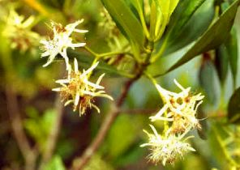
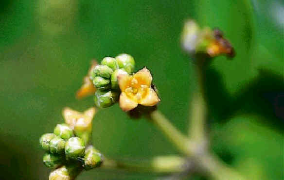
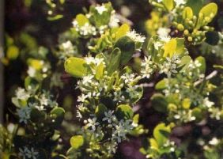
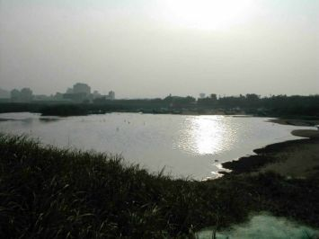
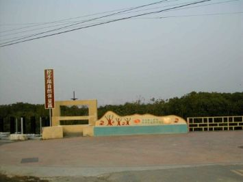
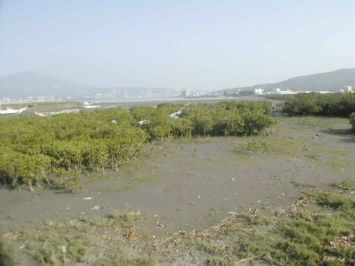

|
1.淡水河水筆仔的由來 淡水河下游的紅樹林是由水筆仔所組成，除了關渡外，社子島的尖端、竹圍以及挖仔尾等地，由於水流緩慢，都生長有水筆仔。尤其是竹圍的紅樹林，是北半球面積最大的水筆仔純林。二十多年前，基於開發需求，對於這片水筆仔的剷除或保留，曾經引起相當大的爭議，對於其來源也有諸多探討。 有人說，淡水河下游這片紅樹林是六、七十年前的淡水富商黃東茂，為了防範颱風挾帶的猛浪侵襲他的汽艇庫及游泳池，於是由南洋引進水筆仔種植，以防止河浪的沖刷，之後才逐漸繁衍出來。 也有人說是其富賈為了美化環境，託人由廈門的鼓浪嶼帶來栽種的，經過幾十年的生育才擴及到今天的規模。在一項研究報告中，也提到在一九二0年，有吳氏、黃氏兩位仕紳於竿榛林種植水筆仔。 如果依照文獻記載，事實上在十七世紀台灣就已經有水筆仔的記錄了。西元一六三二年西班牙人占領淡水後，派出探險隊，沿著淡水河深入台北平原進行調查，隨行的厄斯基貝神父，在其報告中提及，淡水港口附近的Senae社淡水河河口北岸一帶，出產甚多名叫MangOVe灌木紅樹林，淡水河的紅樹林現有的記錄是水筆仔，漢人四兩銀可以買這種樹皮一百斤，然後再運到中國販賣。一八六四年，在淡水英領事館任職的英國人俄德漢民曾在淡水、基隆一帶，採集了的七百多份植物標本，其中就包括了採自淡水的水筆仔，這些標本目前還存放在英國皇家植物園與大英博物館的植物標本館中。 目前世界已知的紅樹林有十一科五十五種，台灣曾經有六種，但由於人為開發的破壞，其中的細蕊紅樹與紅茄苳已經絕滅，現今只剩下水筆仔、海茄苳、五梨跤、欖李四種，而且多半都以分布在南部居多。(關渡自然導遊、徐偉斌、玉山社) |
|||||
|
 水筆仔花 |
五梨跤花 |
 海茄苳花 |
 欖李花 |
||
|
2.
挖仔尾紅樹林的過去與現在與未來 淡水河河口之水筆仔林，已有五十年以上的歷史，相傳在日據時代由吳姓、黃姓兩位仕紳引進少許水筆仔幼苗，種植於竽蓁林附近的河岸，至於從何處引進則無法考證。經查閱民國四十九年台北縣志地理志，淡水河流域並無水筆仔的記載，所以可以推論當時水筆仔的稀少，生長面積有限。，早期因水筆仔生長迅速，居民種植做為用於薪材之用。 四、五十年來紅樹林不斷地由外擴展，生長範圍最上游可達社子島關度一帶，民國七十二年以前關渡沼澤地帶以蘆葦與茳茳鹹草為主要的植物生長區，水筆仔生長進入此區後快速的成長以成為主要的潮間帶濕地植物，現已成為帶狀分拓展到竿榛林一帶。 淡水河口南側挖仔尾一帶，經訪談地方的耆老年紀八十餘歲的李老先生，李老先生一生以捕魚為業，表示早期的挖仔尾是一個潟湖，小魚船可以自由進出潟湖，但是幾十年來淡水河上游的泥沙不斷的流入潟湖中，現在以看不見潟湖原始面貌，已成平坦潮間帶濕地。 他表示淡水河以前是河清水深的河口，當時挖仔尾地區的居民一捕魚尾業，在捕撈魚穫的時期整個淡水河魚船千百計，所捕的魚穫非常多。每當漲潮時間，只要渡輪駛過，小魚因受驚動躍出水面，可知當時淡水河以前生態的豐盛。 根據李老先生表示三十年前挖仔尾一帶是潮間帶濕地並無水筆仔的生長，挖仔尾的水筆仔是由竹圍地區水筆仔的胚軸飄流到此生長，早期只有少量的分佈，在二十年前因水筆仔生長面積以達五、六公頃，現在生長面積約十公頃，並且向河口與上游不斷生長，現在掰八里地區的河岸幾乎皆可以見到水筆仔的小樹，再經四、五年後八里地區的河岸水筆仔由龍形一帶到挖仔尾成帶狀分佈。 |
|||||
|
 漲潮時的中央潟湖 |
 挖仔尾保留區標示 |
 紅樹林區 |
|||